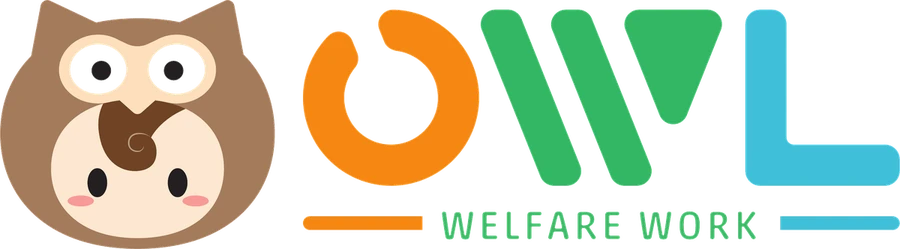

2026-10-22 福祉打ち合わせ用｜広告費は10/21分まで自動取得の実測、問い合わせは10/17までの実測＋10/18以降の追加0件｜検索に出ない設定
TO側 広告費 ¥417,603（Google 37.6万＋Yahoo 4.2万）。LP別はライト版6人が最良（¥20,049/人）。プランGは最も読まれるのに1人（¥162,623/人）。
ライト版は深さ4〜17%で到達率68%→45%に急落（不安6項目を閉じた＋長いセクション）。v3は「かかるお金」で67%→43%。10/29に再測。
ライト版（CP05）は10/3から配信ゼロ。10/21にCP04・CP06を停止、CP05に日6,400円を集約。Googleは分散しているので変更なし。
| LP | Google 費用 | クリック | Yahoo 費用 | クリック | 合計費用 | 問い合わせ | 1人あたり |
|---|---|---|---|---|---|---|---|
| ライト版 CP05 | ¥115,248 | 93 | ¥5,046 | 10 | ¥120,294 | 6（最終10/16） | ¥20,049 |
| プランG CP04 | ¥130,986 | 102 | ¥31,637 | 44 | ¥162,623 | 1（10/9） | ¥162,623 |
| v3 CP06 | ¥80,810 | 77 | ¥5,259 | 7 | ¥86,069 | 1（10/8） | ¥86,069 |
| v2 CP01（10/6停止） | ¥29,193 | 126 | 停止 | — | ¥29,193 | 3（10/4・5） | ¥9,731 |
| 7月資料請求CP01（状態要確認） | ¥19,424 | 105 | — | — | ¥19,424 | 0 | — |
| TO側 合計 | ¥375,661 | 503 | ¥41,942 | 61 | ¥417,603 | 11 | ¥37,964 |
| RB側（参考・別集計） | ¥83,207 | 154 | ¥18,722 | 41 | ¥101,929 | — | — |
出典: 広告スプシ「🎨広告別」（Google＝広告スクリプト、Yahoo＝管理画面の自動取得。どちらも10/21から稼働）。問い合わせ人数は10/17まとめの実測（通知の通数ではなく人数）＋10/18〜21のログ追加0。10/18〜21の4日間でTO側は約¥86,000消化して問い合わせ0。
| 日 | 変更 |
|---|---|
| 10/6 | CP01（v2）停止。Google 3本を各¥6,000/日 |
| 10/7〜8 | Yahoo・Googleの上限CPCを撤廃 → CPC ¥917→¥1,591（クリック数は増えず） |
| 10/10〜12 | ライトvs v3の実験（CP05を¥12,000→戻し）。CP04/05/06 各¥6,578 |
| 10/21 | Yahoo CP04・CP06停止、CP05 ¥6,400/日に集約 |
予算の枠はGoogle 60万／Yahoo 20万（日約2万＋6,600円）の設計どおり消化中。
| 深さ | ライト 10/1-10 | ライト 10/11-21 | v3 10/1-10 | v3 10/11-21 | プランG 10/1-10 | プランG 10/11-21 |
|---|---|---|---|---|---|---|
| PV | 41 | 42 | 17 | 58 | 125 | 57 |
| 10% | 82.9% | 73.8% | 58.8% | 67.2% | 84.8% | 82.5% |
| 20% | 68.3% | 45.2% | 35.3% | 43.1% | 74.4% | 79.0% |
| 50% | 46.3% | 38.1% | 17.6% | 25.9% | 61.6% | 57.9% |
| 75% | 31.7% | 23.8% | 11.8% | 15.5% | 44.8% | 33.3% |
PVは少数なので数pt差は誤差。急落（ライト20%地点 -23pt）とプランGの送信14タップの2点が有意。
| 対象 | 変更 | 長さ（スマホ画面枚数） | 確認 |
|---|---|---|---|
| ライト版「こんな不安はありませんか？」 | 6項目の答えを常時表示（閉じない）。答えを1〜2行に。余白を詰める | 2.2 → 2.9（答えが見える分） | 本番一致・はみ出し0 |
| ライト版「担当者が一緒に動きます」 | 01/02を見出し＋結論1行に。補足・注記・小ボタン2つ・他社比較を削除。Y様事例は残す | 2.6 → 1.8 | 本番一致・はみ出し0 |
| v3「かかるお金は、この3つ」 | 見出しを「OWLに払うのは、月額サポート費だけ。」に。箇条書き削除、5ステップ図を1行に、比較表は閉じたまま結論を見出しに。金額は一切変更なし | 3.3 → 2.0 | 本番一致・はみ出し0 |
| Yahoo CP04・CP06 → 停止、CP05 ¥6,400/日 | 同一KWの競合をなくし、ライト版に全量。1週間ごとにCP05→CP06で順に検証 | — | 設定を自動取得で確認 |
| 日 | 内容 | 状態 |
|---|---|---|
| 10/4〜5 | ライト版に計測タグ、フォーム3本に流入元の隠し項目 | 済 |
| 10/6 | 福祉会議。CP01停止・3本各6,000円 | 済 |
| 10/7〜8 | ライト版本番改修（融資・指定申請・比較・実績）、広告文改稿、上限CPC撤廃 | 済（上限撤廃は要見直し） |
| 10/9〜12 | Yahoo CVタグ復旧、v3用CP06、ライトvs v3実験（早期終了） | 済 |
| 10/11 | プランGのフォーム通知を本部Gmailにも届くよう統一。ライト版・v3のFV変更 | 済 |
| 10/17・20 | 10月まとめ（人数11・CP別費用・Clarity前後）、引継ぎ | 済 |
| 10/21 | Google広告の日次を自動化（広告スクリプトv2・毎朝7時にスプシへ。旧v1を無効化） | 稼働 |
| 10/21 | Yahoo広告の日次を自動化（管理画面の自動取得・毎朝9時） | 稼働 |
| 10/21 | Yahoo投入時にGoogle行を消していた不具合を修正（10月にGoogleの数字が無かった主因） | 済 |
| 10/21 | タスク盤OWLタブにGoogle・Yahooの日次を反映（10/21分まで） | 済 |
| 10/21 | Clarityのヒートマップ・到達率を自動取得する仕組みを新設（LP・期間・デバイス指定） | 稼働 |
| 10/21 | 3LP×2期間の到達率比較・離脱区間の特定（上記3） | 済 |
| 10/21 | Yahoo CP04・CP06停止、CP05へ集約 | 済 |
| 10/22 | ライト版2セクション・v3「かかるお金」を本番反映（実物一致・はみ出し0を確認） | 済 |
| 10/22 | YouTube→公式LINE→プレゼントの導線設計（図解・公式LINE作成依頼文） | 確認待ち |
河合さんへの伝え方: 「LPの出来ではなく、TO側のキーワード（開業・経営）と入札では、ライト版の方が問い合わせに結びついた比較結果」として。河合さん自身のRB側キャンペーンには触れない。
| 媒体 | いま | CP04停止後（案） | 狙い |
|---|---|---|---|
| CP04 ¥6,578／CP05 ¥6,578／CP06 ¥6,578（合計 ¥19,734・上限なし） | CP05 ¥13,156／CP06 ¥6,578（合計不変）・全CP 上限CPC 1,500円 | 問い合わせが来ているライト版に厚く。CPC高騰を止める | |
| Yahoo | CP05 ¥6,400（CP04・CP06停止中） | 10/28まで CP05 単独 → 10/29〜 CP06 単独で1週間 → 良い方に集約 | 同一KWの競合をなくし、1本ずつ素直に測る |
| LP | ライト版・v3を10/22に圧縮済み | 10/29に到達率を再測（変更前: ライト20%地点 68.3%／v3 43.1%）。戻らなければFVも含めて次の手 | 月35件の目標に向けて、入口の離脱を先に潰す |
| 計測 | 媒体CVは全CP 0（通知メールで集計） | ライト／plan-g／v3の送信イベント → Google・Yahooへ接続（担当未定） | LP比較を通知件数頼みから脱する。CPA入札に切り替えられる |
| その他 | 「7月資料請求CP01」が10/1〜17に¥19,424消化 | 状態を確認し、不要なら停止 | 見えていない消化を止める |
| 期限 | 内容 |
|---|---|
| 今日 | プランGの送信ボタン14タップ・ライト版の自由記述欄29タップのレコーディング確認（自動取得） |
| 今日 | CP04の扱い（案1〜3）と上限CPC復帰の判断 |
| メンテ明け | プランG 10/9 法人問い合わせへの対応確認 |
| 10/28 | Yahoo CP05単独の1週間結果 → CP06へ切替 |
| 10/29 | ライト版・v3の到達率を再測し、変更前と比較 |
| 随時 | 媒体CV計測の修復（担当を決める） |
数字の正本: 広告スプシ「🎨広告別」／10/17まとめ／Clarity実測（2026-10-21）。このページは会議用で、検索には出ない設定です。